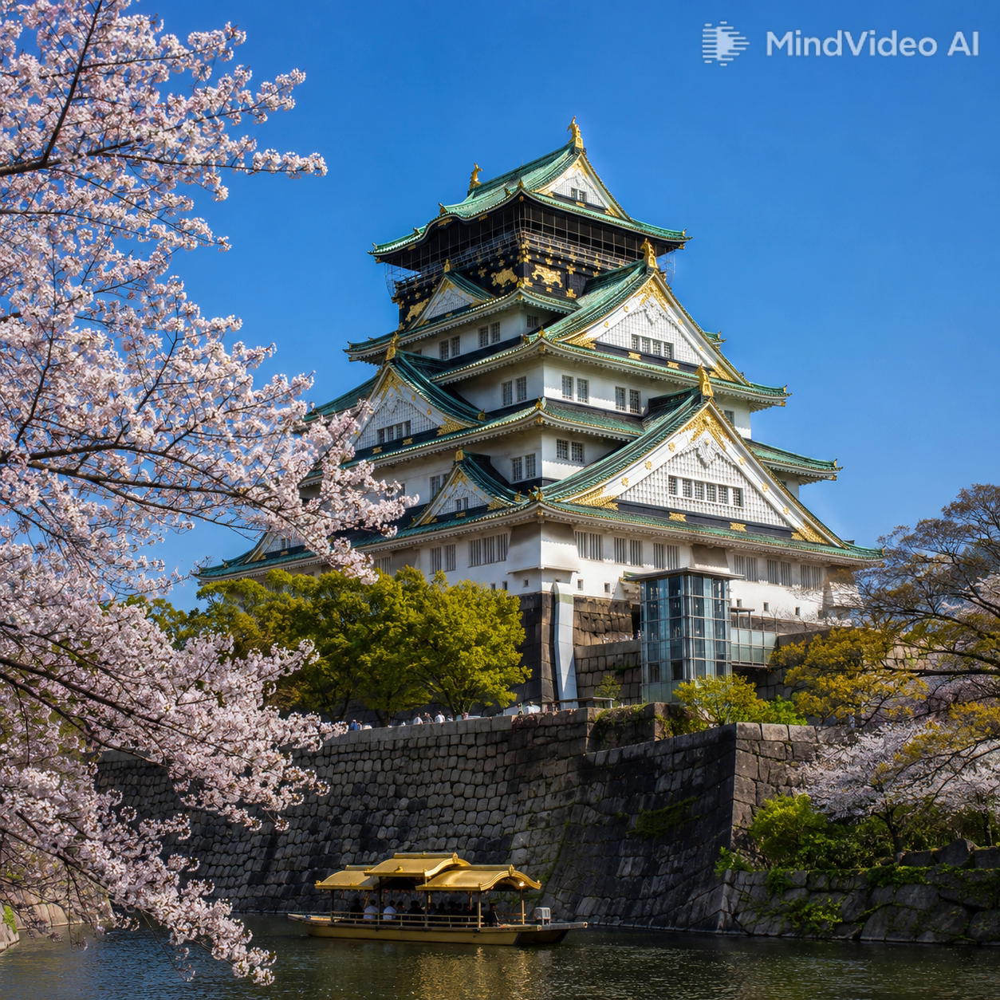
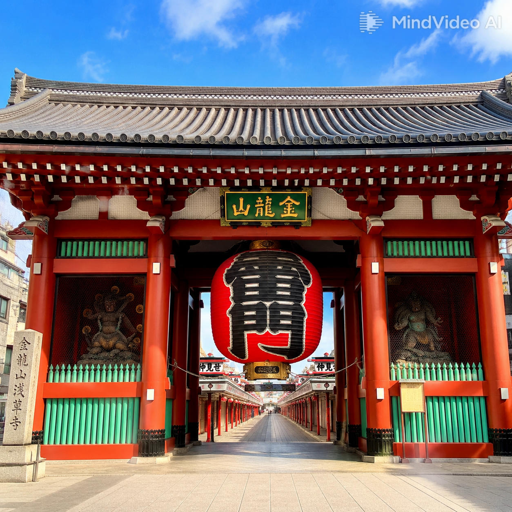
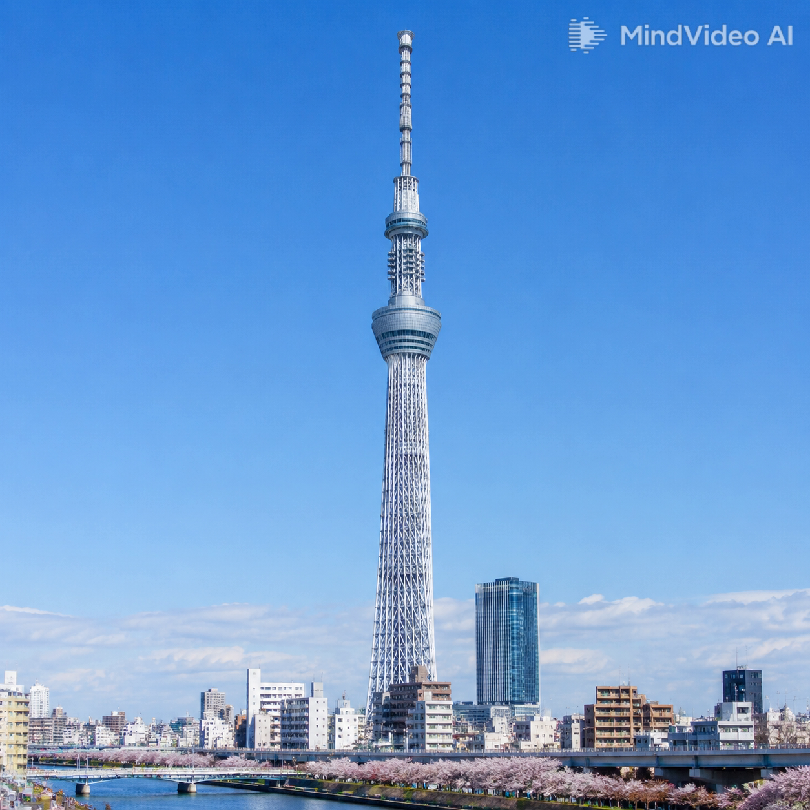

探索日本的經典名所

大阪城是日本三大名城之一，由豐臣秀吉於 1583 年下令建造。天守閣雄踞於大阪市中心，白牆綠瓦、金碧輝煌，是戰國時代權力與野心的象徵。登上頂樓展望台可一覽大阪市景，城內亦設有博物館，展示豐臣秀吉的歷史文物，是認識日本歷史不可錯過的景點。
了解更多 →
雷門是淺草寺的正門，正式名稱為「風雷神門」，左右供奉風神與雷神。門前懸掛的巨大紅燈籠是東京最具代表性的地標之一，高約 4 公尺、重約 700 公斤。穿過雷門即是熱鬧的仲見世商店街，通往日本最古老的寺廟——淺草寺，每年吸引數千萬遊客到訪。
了解更多 →
晴空塔高 634 公尺，是全世界最高的電波塔，也是東京最耀眼的新地標。634 這個數字取自「武藏（Musashi）」的日語諧音，充滿歷史巧思。塔上設有「天望甲板」（350m）與「天望迴廊」（450m）兩座展望台，可 360 度俯瞰關東平原，晴天時甚至能遠眺富士山。
了解更多 →在製作這個網站的過程中，我深入認識了日本三個極具代表性的地標景點，從中學到了許多關於日本歷史、建築與文化的知識。
大阪城天守閣讓我感受到豐臣秀吉的雄心壯志，其白牆綠瓦的外觀與堅固的石垣展現了戰國時代的建築智慧。雷門的紅色大燈籠已成為東京的象徵之一，淺草寺周邊的傳統氛圍讓人彷彿穿越回江戶時代。而晴空塔以 634 公尺的高度俯瞰東京，融合了傳統五重塔的抗震技術與現代工藝，體現了日本文化中「古今交融」的特色。
透過這次的網頁設計，我學會了如何使用 HTML 與 CSS 建立多頁面靜態網站，並透過卡片式佈局與內部連結提升使用者體驗。每個景點頁面從歷史、地理、人文、交通到美食逐一介紹，期許能讓訪客感受到日本旅遊的魅力。未來若有機會，我希望實際走訪這三個景點，親身體驗這些地方的美好。